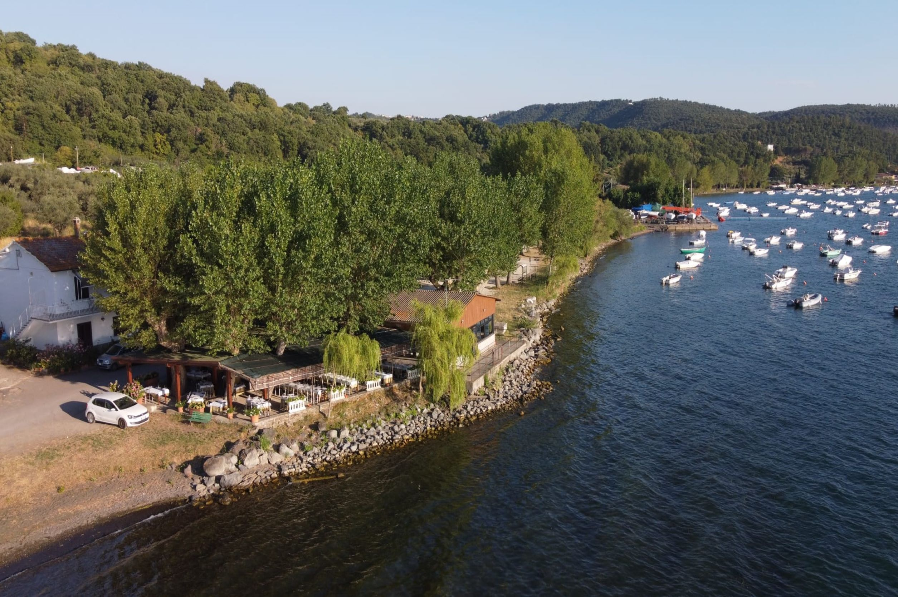

Cinque generazioni di tratto-ristoratori, cinque generazioni di passione, dedizione e amore per il territorio...
Scopri di più

Una location estiva mozzafiato, un posto dove il rispetto per il tempo che passa non viene mai meno...
Scopri di più

Piatti di mare e lago accompagnati da vini regionali e la volontà di rispettare i sapori di una volta...
Scopri di più